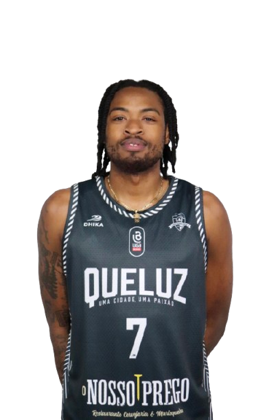
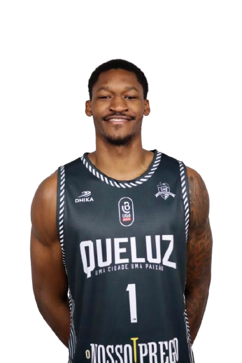
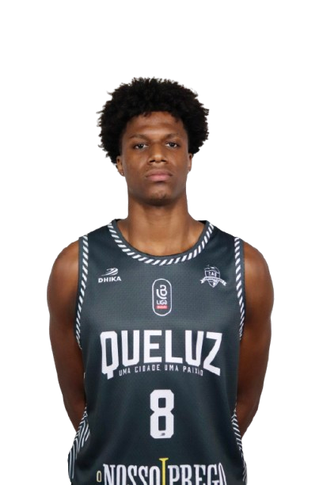
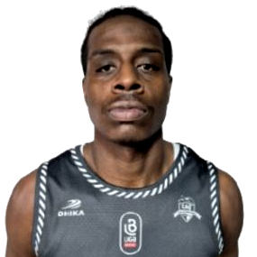

Queluz O NOSSO PREGO
Opponent Game Plan - CAQ

Team Identity vs League
| Metric | Team | League Avg | Rank | Delta |
|---|---|---|---|---|
| Pace | 78.3 | 79.3 | 9 | -1 |
| OffRtg | 108.6 | 107.9 | 5 | 0.7 |
| DefRtg | 112.7 | 107.8 | 10 | 5 |
| NetRtg | -4.2 | 0.1 | 8 | -4.3 |
| AST/G | 19.2 | 18.5 | 5 | 0.7 |
| TOV% | 17.5 | 18.4 | 3 | -1 |
| ORB% | 28.9 | 31.4 | 8 | -2.6 |
| PF/G | 22.3 | 21 | 10 | 1.2 |
| FT Rate | 36 | 35.2 | 5 | 0.8 |
| 3PA Rate | 41.4 | 40.9 | 6 | 0.5 |
How They Play
Tempo
Below-average pace; they are more comfortable when the game stays organized in the half court.
Ball Movement
Ball movement is close to league average; they can share it but are not purely pass-first.
Offensive Glass
Limited offensive rebounding impact; finishing the first contest usually kills the possession.
Turnovers
Turnover profile is close to league average; pressure helps, but it is not the whole plan.
Physicality
Above-average foul volume; contact pressure and discipline both matter in this matchup.
Shot Mix
Perimeter volume is close to league average; shot mix alone does not define them.
Overview
Most-Used Player
J. Simmons
Primary Scorer
J. Simmons
Top 3PT Threat
J. Dixon (42.3%)
Preferred Team Scoring Area
Above the Break 3
Most-Used Lineup
A. Hallman | D. Wade | J. Simmons | M. Bradley | W. Robinson
Best-Performing Lineup
A. Hallman | D. Wade | J. Simmons | M. Bradley | W. Robinson
Game Plan in 4 Keys
- Control the rhythm: they are more comfortable in a controlled half-court game, so do not let them play cleanly into structure.
- Win the first action: they do not consistently hurt teams with second-chance volume, so clean first stops carry value.
- Know the first reference: J. Simmons is a movement shooter, and the plan should start with taking away his comfort.
- Closeout discipline matters: J. Dixon, D. Horta are the first perimeter names you cannot lose in help situations.
Key Players
| Player | Mpg | Ppg | 3PA | 3P% | Main Area | Role | Defensive Cue |
|---|---|---|---|---|---|---|---|
 | 31.0 | 18.1 | 146 | 37.0% | Above the Break 3 | movement shooter | Gap and recover |
 | 29.3 | 10.9 | 32 | 25.0% | Paint Non-RA | primary handler | Wall off paint |
 | 27.8 | 13.3 | 67 | 37.3% | Restricted Area | movement shooter | Wall off paint |
 | 25.4 | 6.5 | 41 | 22.0% | Restricted Area | paint finisher | Wall off paint |
 | 22.3 | 11.2 | 78 | 42.3% | Above the Break 3 | movement shooter | Gap and recover |
 | 24.3 | 9.9 | 64 | 37.5% | Above the Break 3 | movement shooter | Gap and recover |
Scouting Notes
Offense
- The main offensive references are J. Simmons and M. Bradley; load the scouting plan into those names first.
Perimeter Shooting
- Priority closeouts start with J. Dixon, D. Horta, and D. Wade; do not lose them in help-and-recover situations.
- Some perimeter volume comes from A. Hallman and G. Tavares; contest, but do not over-help into secondary advantages.
Scoring Areas
- Their offense naturally flows toward Above the Break 3; protect that area early in possessions.
- Several players have clear comfort zones, especially J. Simmons, W. Robinson, and M. Bradley; force them away from preferred areas.
Units
- Most-used lineup to rehearse first: A. Hallman | D. Wade | J. Simmons | M. Bradley | W. Robinson.
- Secondary lineup to recognize: A. Hallman | D. Horta | J. Simmons | M. Bradley | W. Robinson.
- Recognize the main duo/trio combinations: J. Simmons | W. Robinson and J. Simmons | M. Bradley | W. Robinson.
Defensive Emphasis
- Limited offensive rebounding impact; finishing the first contest usually kills the possession.
- Do not lose J. Dixon and D. Horta in help-and-recover situations.
Primary Shooting Threats
| Player | Threat Profile | 3PA | 3P% | 3PA Rate | Preferred Area | Defensive Cue |
|---|---|---|---|---|---|---|
J. Dixon | Closeout | Preferred Area | 78 | 42.3% | 54.5% | Above the Break 3 | Top closeout |
 | Closeout | Preferred Area | 37 | 40.5% | 57.8% | Above the Break 3 | Top closeout |
| Closeout | Preferred Area | 64 | 37.5% | 60.4% | Above the Break 3 | Top closeout |
| Closeout | Preferred Area | 67 | 37.3% | 34.5% | Restricted Area | Top closeout |
| Volume 3PT | Preferred Area | 41 | 22.0% | 35.7% | Restricted Area | Wall off paint |
 | Volume 3PT | Preferred Area | 30 | 30.0% | 73.2% | Above the Break 3 | Live with volume |
S. Casarim | Volume 3PT | 1 | 0.0% | 33.3% | Paint Non-RA | Wall off paint |
J. Simmons | Preferred Area | Above the Break 3 | Gap and recover | |||
| Preferred Area | Paint Non-RA | Wall off paint |
Priority Closeouts
| Player | 3PA | 3P% | 3PA Rate | Pts/Shot | Defensive Cue |
|---|---|---|---|---|---|
J. Dixon | 78 | 42.3% | 54.5% | 1.2 | Gap and recover |
D. Horta | 37 | 40.5% | 57.8% | 1.1 | Gap and recover |
| 64 | 37.5% | 60.4% | 1.0 | Gap and recover |
| 67 | 37.3% | 34.5% | 1.0 | Wall off paint |
Volume, Lower Efficiency
| Player | 3PA | 3P% | Pts/Shot | Defensive Cue |
|---|---|---|---|---|
| 41 | 22.0% | 0.9 | Wall off paint |
| 30 | 30.0% | 0.8 | Gap and recover |
S. Casarim | 1 | 0.0% | 0.0 | Wall off paint |
Preferred Scoring Areas
| Player | Area | Zone Share | FG% | Pts/Shot | Defensive Cue |
|---|---|---|---|---|---|
J. Simmons | Above the Break 3 | 46.5% | 32.5% | 1.0 | Gap and recover |
| Restricted Area | 33.5% | 67.7% | 1.4 | Wall off paint |
| Paint Non-RA | 36.1% | 47.5% | 1.0 | Wall off paint |
J. Dixon | Above the Break 3 | 37.8% | 42.6% | 1.3 | Gap and recover |
| Above the Break 3 | 50.0% | 35.8% | 1.1 | Gap and recover |
| Restricted Area | 30.4% | 65.7% | 1.3 | Wall off paint |
D. Horta | Above the Break 3 | 31.2% | 45.0% | 1.4 | Gap and recover |
| Above the Break 3 | 43.9% | 22.2% | 0.7 | Gap and recover |
Team Shot Map Summary
| Area | Attempts | FG% | Pts/Shot | Zone Share |
|---|---|---|---|---|
| Above the Break 3 | 387 | 33.6% | 1.0 | 31.4% |
| Restricted Area | 276 | 68.1% | 1.4 | 22.4% |
| Paint Non-RA | 250 | 44.0% | 0.9 | 20.3% |
| Mid-Range | 197 | 31.5% | 0.6 | 16.0% |
| Corner 3 Left | 69 | 29.0% | 0.9 | 5.6% |
Lineups to Prepare For
| Category | Lineup | Minutes | Pts For/40 | Pts Allowed/40 | Net/40 |
|---|---|---|---|---|---|
| Base lineup | A. Hallman | D. Wade | J. Simmons | M. Bradley | W. Robinson | 76.5 | 87.9 | 82.7 | 5.2 |
| Rotation lineup | A. Hallman | D. Horta | J. Simmons | M. Bradley | W. Robinson | 44.8 | 89.3 | 103.6 | -14.3 |
Roster
| Player | Position | Height Cm | Games | Mpg | Ppg | Rpg | Apg | Spg | Tov Pg | Bpg |
|---|---|---|---|---|---|---|---|---|---|---|
J. Simmons | 19 | 31.0 | 18.1 | 4.6 | 2.8 | 2.1 | 2.1 | 0.3 | ||
| 18 | 29.3 | 10.9 | 2.7 | 8.9 | 1.3 | 2.3 | 0.1 | ||
| 19 | 27.8 | 13.3 | 5.8 | 1.3 | 0.7 | 1.8 | 0.3 | ||
| 19 | 25.4 | 6.5 | 7.0 | 1.6 | 0.7 | 1.5 | 0.2 | ||
J. Dixon | 19 | 22.3 | 11.2 | 3.6 | 0.8 | 0.7 | 1.1 | 0.2 | ||
| 16 | 24.3 | 9.9 | 2.9 | 1.9 | 0.4 | 1.4 | 0.1 | ||
D. Horta | 19 | 15.9 | 4.2 | 1.8 | 1.1 | 0.6 | 1.3 | 0.1 | ||
| 17 | 6.7 | 2.6 | 0.3 | 0.3 | 0.2 | 0.1 | 0.0 | ||
 | 4 | 15.6 | 6.2 | 2.8 | 0.5 | 0.8 | 1.5 | 0.2 |
Duos / Trios to Recognize
| Type | Players | Minutes | Pts For/40 | Pts Allowed/40 | Net/40 |
|---|---|---|---|---|---|
| duo | J. Simmons | W. Robinson | 404.4 | 84.5 | 86.7 | -2.2 |
| trio | J. Simmons | M. Bradley | W. Robinson | 287.2 | 88.7 | 92.3 | -3.6 |
| duo | D. Wade | W. Robinson | 268.4 | 83.6 | 79.7 | 3.9 |
| duo | D. Wade | W. Robinson | 268.4 | 83.6 | 79.7 | 3.9 |
Scout Team Emphasis
Matchups to rehearse
J. Dixon, D. Horta, D. Wade
Primary area
Above the Break 3
Recognition lineup
A. Hallman | D. Wade | J. Simmons | M. Bradley | W. Robinson